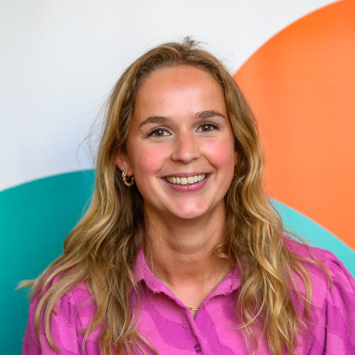

Resume of Evelien van der Linden

Contact information
Summary
I am a 25 year old biomedical engineer that aspires to contribute to our society by using my technical and managing skills. I am a calm, structured person that can handle stressful situations. My personality can be described as an active grandma. You can find out more about my hobbies on this page.
Education
- Feb 2023 - June 2025 Master of Science
Biomedical Engineering
Eindhoven University of Technology
Nanoscopy for Nanomedicine
- Sep 2019 - Feb 2023 Bachelor of Science
Medical Sciences and Technology
Eindhoven University of Technology
- Sep 2013 - Jul 2019 Gymnasium NT/NG
Het Nieuwe Lyceum, Bilthoven
Work experience
- July 2025 - present
Project assistant EWUU alliance at the educational dpt. of Biomedical Sciences
UMC Utrecht, Utrecht
- March 2025 - June 2025 intern
LifeTec Group, Eindhoven
- Sep 2022 - June 2025 receptionist
Huize het Oosten, Bilthoven
- Dec 2017 - Sep 2022 service desk
Plus Bilthoven B.V., Bilthoven
- Jan 2016 - Nov 2017 stocking
Dirk van den Broek, De Bilt
Skills
- HTML programming (Basic Level)
- Data analysis (Matlab, ImageJ)
- Microsoft
- Laboratory skills (cell culture, (super-resolution) microscopy, live cell imaging, microfluidics)